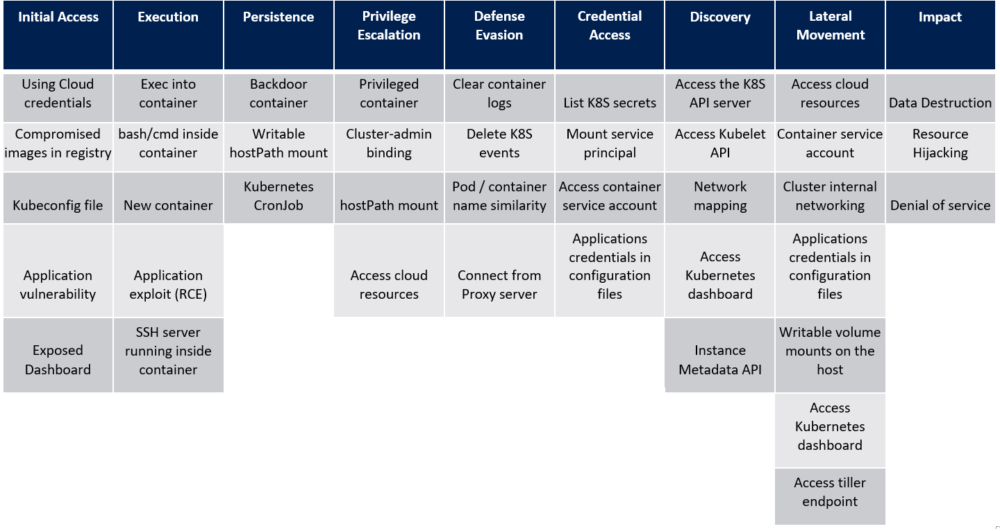
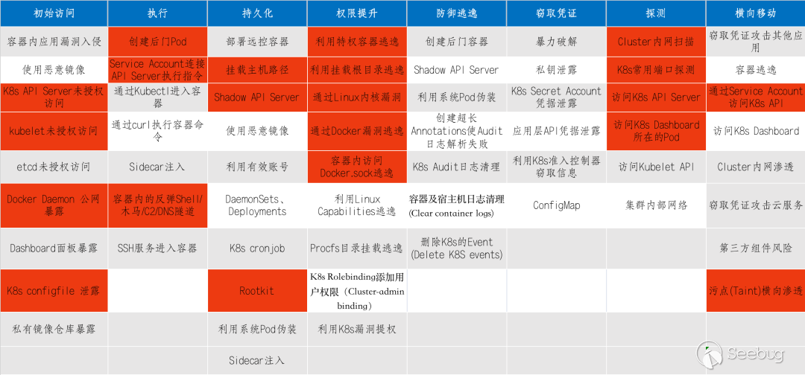

Microsoft的Kubernetes attack matrix [1] #

Kubernetes attack matrix-enhancement [2] #

初始访问 #
● API Server 未授权访问 [5]
-
API Server 作为 K8s 集群的管理入口，通常使用 8080 和 6443 端口，其中 8080 端口无需认证，6443端口需要认证且有 TLS 保护。如果开发者使用 8080 端口，并将其暴露在公网上，攻击者就可以通过该端口的 API，直接对集群下发指令。
-
另一种场景是运维人员配置不当，将"system:anonymous"用户绑定到"cluster-admin"用户组，从而使6443端口允许匿名用户以管理员权限向集群内部下发指令。
● kubelet 未授权访问 [5]
● Docker Daemon 公网暴露
● K8s configfile 泄露
- K8s configfile 作为 K8s 集群的管理凭证，其中包含有关 K8s 集群的详细信息（API Server、登录凭证）。
- 如果攻击者能够访问到此文件(如办公网员工机器入侵、泄露到 Github的代码等)，就可以直接通过 API Server 接管 K8s 集群，带来风险隐患。
- 拿到K8s configfile完整利用流程
K8s configfile –> 创建后门Pod/挂载主机路径 –> 通过Kubectl 进入容器 –> 利用挂载目录逃逸。
执行 #
● 利用Service Account
容器内部默认携带 K8s Service Account的认证凭据,路径为：/run/secrets/kubernetes.io/serviceaccount/token
如运维配置不当没有设置 RBAC （基于角色的访问控制）,那么攻击者就可以通过 Pod 获取到 Token 进行API Server认证。
…创建特权Pod…
● CURL方式请求
● kubectl方式请求
持久化 #
● DaemonSets、Deployments
● Shadow API
● Rootkit
● cronjob持久化
权限提升 #
● 特权容器逃逸 [3]
-
「容器逃逸」指这样的一种过程和结果：首先，攻击者通过劫持容器化业务逻辑，或直接控制（CaaS等合法获得容器控制权的场景）等方式，已经获得了容器内某种权限下的命令执行能力；攻击者利用这种命令执行能力，借助一些手段进一步获得该容器所在直接宿主机（经常见到“物理机运行虚拟机，虚拟机再运行容器”的场景，该场景下的直接宿主机指容器外层的虚拟机）上某种权限下的命令执行能力。
-
当操作者执行docker run –privileged时，Docker将允许容器访问宿主机上的所有设备，同时修改AppArmor或SELinux的配置，使容器拥有与那些直接运行在宿主机上的进程几乎相同的访问权限。
● Docker漏洞
● Linux Capabilities逃逸
探测 #
● 内网扫描
● K8s常用端口探测
● 集群内部网络
横向移动 #
● 污点(Taint)横向渗透
参考 #
- Threat matrix for Kubernetes overview
- 云原生之 Kubernetes 安全 深信服千里目安全实验室 overview
- 容器逃逸技术概览 ***
- 红队视角下的容器逃逸利用及分析 未
- 浅析K8S各种未授权攻击方法
- k8s对外攻击面总结 未